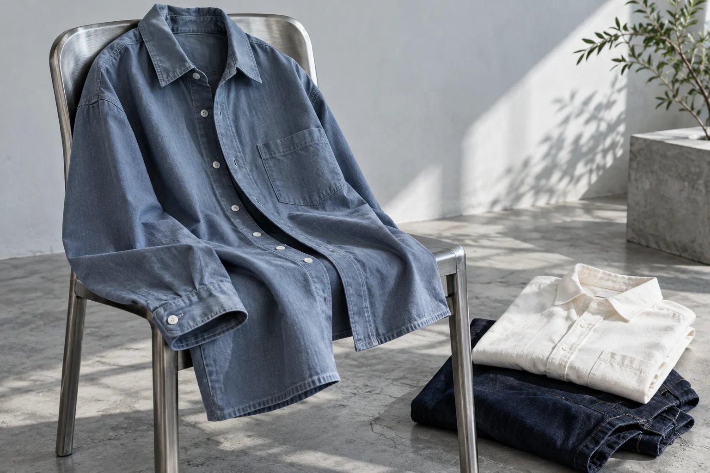

← 商品一覧
ORDIN / SAMPLE COLLECTION
毎日の組み合わせを考えるための架空アイテム。寸法や素材は画面設計用の仮設定です。
バッグの内容を確認 →素材とお手入れ（仮設定）
綿100%を想定したサンプル。製品化時は実物の洗濯表示・素材表記に置き換えます。架空のため品質を保証するものではありません。
配送・返品（仮設定）
送料・発送日・返品条件は契約後に店舗の正式条件を掲載します。このデモでは注文できません。

ORDIN / SAMPLE COLLECTION
毎日の組み合わせを考えるための架空アイテム。寸法や素材は画面設計用の仮設定です。
バッグの内容を確認 →綿100%を想定したサンプル。製品化時は実物の洗濯表示・素材表記に置き換えます。架空のため品質を保証するものではありません。
送料・発送日・返品条件は契約後に店舗の正式条件を掲載します。このデモでは注文できません。